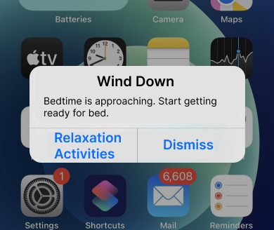

Selected projects
Making Variety of Illinois’ website more accessible
An accessibility audit and redesign for a nonprofit serving families with special needs, with the volunteer sign-up page as a priority.

Why we put off sleep
Research and design strategy on how social media use before bed affects bedtime procrastination, ending in an iOS Sleep settings prototype.
About me
As a product designer, I enjoy working to develop, maintain or improve design systems, conduct user-focused research, and exploring how emerging technologies like AI and Augmented Reality can benefit people. I’m interested in using my skills to serve communities in need and promote a more equitable and healthy society.
I earned my M.S. in Human-Computer Interaction from DePaul University and a B.S. in Political Science from Northwestern University.